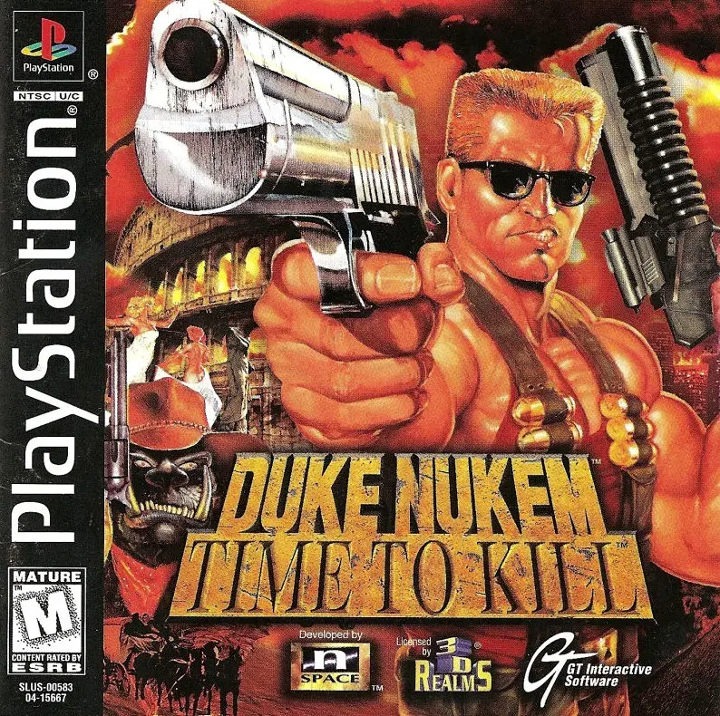

💡 Para jogar em tela cheia, clique no ícone de configurações "↓" no centro do emulador e então "Enter Full Screen"

Desenvolvedora: n-Space
Editora: GT Interactive / 3D Realms
Lançamento: 1998
Gênero: Tiro em 3ª Pessoa (TPS) / Ação
Modos de Jogo: Single-player, Multiplayer (1-2)
A estreia exclusiva de Duke no gênero de terceira pessoa. Muitas vezes descrito como "Tomb Raider para machos", o jogo trocou a visão em primeira pessoa por uma câmera nas costas, permitindo mais exploração, saltos precisos e ver o próprio Duke interagindo com o cenário. Manteve todo o humor adulto, a violência exagerada e as referências pop que consagraram a franquia.
Os alienígenas estão tentando mudar a história para garantir que a raça humana seja escravizada antes mesmo de Duke nascer. Para impedi-los, Duke deve viajar no tempo, perseguindo os invasores através do Velho Oeste, da Roma Antiga e da Europa Medieval, limpando a linha do tempo na base da bala.
O modo Deathmatch (Multiplayer) com tela dividida para dois jogadores era viciante, permitindo duelos nos mapas da campanha. Além disso, encontrar todos os segredos do jogo liberava versões aprimoradas das armas (como a Super Eagle) e munição infinita para uma segunda jogatina caótica.
Para salvar seu progresso neste jogo, você pode salvar o arquivo .save usando as opções do emulador que está utilizando. Isso pode ser feito através do ícone 💾 no menu no canto inferior esquerdo da tela. Isso criará um arquivo de salvamento que você poderá carregar 📂 posteriormente para continuar de onde parou.